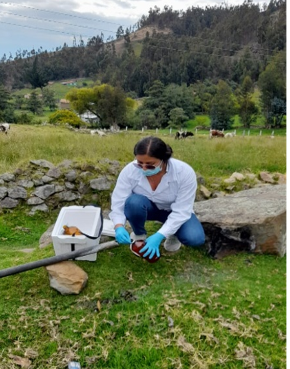

Químico con amplia experiencia en formulación y ejecucion de proyectos.
Nuestros Proyectos
Investigación aplicada con impacto real en la sociedad
Evaluación de la eficiencia de un prototipo de humedal artificial de flujo subsuperficial para el tratamiento de aguas residuales domésticas
Autora: Gina Marcela Quintana Tibaduiza
2022 - Universidad Antonio Nariño
Este trabajo propone una solución económica, sustentable y de bajo mantenimiento para el tratamiento de aguas residuales domésticas en zonas rurales sin acceso a sistemas de alcantarillado.
Principales logros:
Reducción de DBO₅, DQO, SST y turbidez según normativa colombiana
Eliminación del 99.99% de microorganismos patógenos
Sistema funcional con materiales locales accesibles
Alternativa escalable para comunidades rurales

José David Tamára Jaramillo
COORDINADORA DE PROYECTOS
Fíisco con amplia experiencia en la gestión y el seguimiento de proyectos.
Desarrollo de un método biotecnológico que reduce los tiempos de espera para la obtención de sustrato orgánico, optimizando la descomposición y mejorando su calidad nutricional.
Resultados destacados:
Reducción del tiempo de procesamiento de 10 a 4 meses
Incremento estimado de $41.000.000 COP anuales en ingresos
Producción de más de 2.160 toneladas mensuales de abono
Contribución directa a los Objetivos de Desarrollo Sostenible
Alex Grinfield
ESPECIALISTA EN PROGRAMACIÓN Y MODELADO
Aporta su experiencia en el desarrollo de herramientas computacionales para la investigación.
Nuestros Cursos
Formación integral en ciencias básicas aplicadas a la ingeniería
🧪
Química
Fundamentos de química general con enfoque aplicado a las ingenierías, desde estructura atómica hasta electroquímica.
⚛️
Física
Leyes fundamentales que rigen el universo con aplicaciones prácticas en ingeniería.
Roxie Swanson
ENLACE CON LA INDUSTRIA
Responsable de establecer colaboraciones con empresas y organizaciones del sector.
📊
Matemática
Desarrollo del pensamiento lógico y habilidades de resolución de problemas complejos.
📈
Ciencia de Datos
Extracción de conocimiento valioso a partir de grandes conjuntos de datos usando técnicas modernas.
Nombre Investigador 5
Cargo Investigador 5
Breve descripción del Investigador 5.
💻
Programación
Desarrollo de software y automatización, desde fundamentos hasta sistemas embebidos avanzados.
Nombre Investigador 6
Cargo Investigador 6
Breve descripción del Investigador 6.
Eventos
Mantente al día con nuestras actividades académicas
Próximamente estaremos publicando información sobre seminarios, talleres y conferencias.
🧪 Curso de Química General para Ingeniería
Objetivo general: Brindar al estudiante los fundamentos de la química general con un enfoque aplicado a las ingenierías, desarrollando competencias en el análisis y solución de problemas relacionados con materiales, energía y reacciones químicas.
Módulos del curso:
Introducción a la Química: Historia, método científico y aplicaciones en ingeniería
Estructura Atómica: Teoría cuántica, configuraciones electrónicas
Tabla Periódica: Propiedades periódicas y selección de materiales
Enlace Químico: Tipos de enlaces y propiedades de materiales
Estequiometría: Cálculos químicos aplicados
Estados de la Materia: Gases, líquidos y sólidos
Soluciones: Concentraciones y propiedades coligativas
Termoquímica: Energía en reacciones químicas
Cinética y Equilibrio: Velocidad de reacciones
Ácidos y Bases: pH y neutralización
Electroquímica: Celdas y corrosión
Curso de Programación - Arduino: De Principiante a Avanzado
Objetivo general: Desarrollar competencias completas en programación de sistemas embebidos con Arduino, desde conceptos básicos hasta implementaciones industriales avanzadas.
Metodología progresiva de aprendizaje
Progresa sistemáticamente desde encender tu primer LED hasta desarrollar sistemas complejos de monitoreo industrial con comunicación inalámbrica.
Control automático con sensores: LED que responde a luz ambiental
Temporización no bloqueante: Uso de millis() en lugar de delay()
unsigned long anterior = 0;
const long intervalo = 1000;
void loop() {
unsigned long actual = millis();
if (actual - anterior >= intervalo) {
digitalWrite(13, !digitalRead(13));
anterior = actual;
}
}
Estructuras de control avanzadas
Funciones personalizadas y modularización
Nivel 3: Avanzado
Interrupciones hardware: Respuesta inmediata a eventos
Gestión de memoria EEPROM: Almacenamiento no volátil
Comunicaciones I2C, SPI, UART: Integración con múltiples sensores
Máquinas de estado finitos (FSM): Control determinista
Optimización de memoria: PROGMEM, gestión de Flash y SRAM
Ejemplo integrado: Sistema de control inteligente
Control automático de LED con configuración vía Serial
#define LED_PIN 13
#define LDR_PIN A0
NUESTROS PROYECTOS
Evaluación de la eficiencia de un prototipo de humedal artificial de flujo subsuperficial para el tratamiento de aguas residuales domésticas provenientes de un pozo séptico
Autora
Gina Marcela Quintana Tibaduiza
Trabajo de grado presentado para optar al título de Ingeniera Ambiental
Universidad Antonio Nariño – Programa de Ingeniería Ambiental – Sede Duitama (Boyacá)
Año: 2022
Evaluar la eficiencia de un prototipo de humedal artificial de flujo subsuperficial a escala laboratorio para el tratamiento de aguas residuales domésticas provenientes de un pozo séptico.
void loop() {
int valorLuz = analogRead(LDR_PIN);
if (valorLuz < umbralLuz && !estadoLED) encenderLED();
else if (valorLuz >= umbralLuz && estadoLED) apagarLED();
if (Serial.available() > 0) procesarComandoSerial();
delay(100);
}
Objetivos Específicos
Analizar estudios existentes para el diseño del prototipo.
Caracterizar fisicoquímica y microbiológicamente el agua residual.
Observar y monitorear indicadores clave como DBO₅, SST, pH, OD y parámetros microbiológicos.
Evaluar la eficiencia del humedal a través de dichas mediciones.
Este trabajo propone una solución económica, sustentable y de bajo mantenimiento para el tratamiento de aguas residuales domésticas en zonas rurales sin acceso a sistemas de alcantarillado, particularmente en el departamento de Boyacá, Colombia.
Módulos especializados
Arquitectura y optimización de memoria
Principales logros:
Gestión eficiente de Flash, SRAM y EEPROM
Técnicas de ahorro con PROGMEM
Prevención de fragmentación de memoria
Reducción de DBO₅, DQO, SST y turbidez a valores incluso mejores que los exigidos por la Resolución 631 de 2015 del Ministerio de Ambiente colombiano.
Eliminación del 99.99% de microorganismos patógenos como Escherichia coli, Shigella dysenteriae y Salmonella typhimurium tras 8 días de tratamiento.
Validación de un sistema de tratamiento funcional y replicable, hecho con materiales accesibles y vegetación local (junco - Juncus effusus), que puede ser implementado en comunidades rurales.
Contribuye al cumplimiento del derecho al acceso a saneamiento básico y a un ambiente sano, según lo establecido en la Constitución Política de Colombia y en acuerdos internacionales.
Este tipo de tecnologías representa una alternativa de tratamiento descentralizado que puede escalarse y adaptarse a distintas comunidades rurales, impactando positivamente la salud pública, la seguridad alimentaria y la protección de fuentes hídricas.
Gestión avanzada de energía
Implementación biotecnológica en pacas digestoras
Biotechnological Implementation in Digester Bales
Autores
Modos de bajo consumo en AVR y ESP32
Deep sleep y wake-up sources
Optimización para aplicaciones a batería
Jhon Edison Perez Loaiza
Erika Lorena Becerra Becerra
Miguel Fernando Molano Cabrejo
Carlos Andrés Palacio Gómez
Ana Rocío Salamanca
Comunicaciones avanzadas
Afiliación: Universidad Antonio Nariño – Facultad de Ingeniería Ambiental y Civil, Colombia
Objetivo General
Implementar un método biotecnológico en pacas digestoras que permita reducir los tiempos de espera para la obtención de sustrato (abono orgánico)
a partir de residuos orgánicos, optimizando la descomposición y mejorando su calidad nutricional.
Objetivos Específicos
Protocolos I2C, SPI, UART con buffers circulares
Comunicación inalámbrica: LoRa, BLE, MQTT
Manejo de errores y timeouts
Analizar fisicoquímica, microbiológica y bioquímicamente el sustrato obtenido.
Evaluar el efecto de la incorporación de estiércol y microorganismos en la calidad del abono.
Determinar la viabilidad de técnicas como la fluorescencia de rayos X frente a la espectroscopía de absorción atómica para analizar los abonos.
Programación orientada a eventos
Impacto del Proyecto
Este proyecto propone una solución sostenible al manejo de residuos orgánicos en zonas rurales como el municipio de Iza (Boyacá),
reduciendo la carga sobre los rellenos sanitarios y promoviendo la economía circular mediante la producción de abonos orgánicos de alta calidad.
Resultados y beneficios destacados:
Interrupciones y prevención de race conditions
Scheduler cooperativo
Sistemas reactivos y tiempo real
Reducción del tiempo de procesamiento de abono de 10 meses a 4 meses mediante la incorporación de microorganismos.
Incremento estimado de ingresos para empresas de compostaje hasta $41.000.000 COP adicionales por año.
Aprovechamiento del 40% de residuos orgánicos generados en Boyacá para producir más de 2.160 toneladas mensuales de abono.
Contribución directa a los Objetivos de Desarrollo Sostenible (ODS): Hambre Cero, Producción y Consumo Responsable, Acción por el Clima y Vida de Ecosistemas Terrestres.
Generación de sustratos con bajo contenido de patógenos y ricos en macro y micronutrientes, esenciales para la agricultura regenerativa.
Validación del uso de técnicas como la fluorescencia de rayos-X como alternativa eficiente frente a métodos tradicionales.
Proyecto final integrado
Sistema de monitoreo industrial que incluye:
NUESTROS CURSOS
Química
Explora los fundamentos de la química y sus diversas ramas.
Física
Descubre las leyes que rigen el universo.
Matemática
Desarrolla tu pensamiento lógico y habilidades de resolución de problemas.
Ciencia de Datos
Aprende a extraer conocimiento valioso a partir de grandes conjuntos de datos.
Programación
Adquiere las habilidades para crear software y automatizar tareas.
🧪 Curso de Química General para Ingeniería
🎯 Objetivo general:
Brindar al estudiante los fundamentos de la química general con un enfoque aplicado a las ingenierías, desarrollando competencias en el análisis y solución de problemas relacionados con materiales, energía, reacciones químicas, y propiedades de la materia.
📚 Módulo 1: Introducción a la Química y su Rol en la Ingeniería
Múltiples sensores I2C (BMP280, MPU6050)
Control de actuadores PWM con FSM
Interfaz de configuración vía Serial
Modos de bajo consumo automático
Comunicación MQTT para IoT
Sistema de logging y recuperación de errores
🔬 Fundamentos de la Materia y su Composición
1. ¿Qué es la Materia?
Materia es todo aquello que tiene masa y ocupa espacio. Está formada por partículas subatómicas (protones, neutrones y electrones), que a su vez constituyen átomos. Se considera que una entidad es materia cuando presenta propiedades físicas y químicas medibles, como densidad, volumen, inercia y energía asociada.
Desde el punto de vista de la física cuántica y la química moderna, consideramos como materia a una partícula cuando posee masa en reposo y puede interactuar mediante fuerzas fundamentales (como la electromagnética). Esta definición incluye desde átomos individuales hasta moléculas complejas y sistemas materiales macroscópicos.
Implicaciones para la Química: Entender qué es la materia permite estudiar su estructura interna, transformación mediante reacciones químicas y su comportamiento energético. La química se ocupa del análisis de cómo se organiza la materia a nivel atómico y molecular y cómo se transforma.
2. ¿Qué es un Átomo, un Isótopo y una Forma Alotrópica?
El átomo es la unidad básica de la materia. Está compuesto por un núcleo (protones y neutrones) y una corteza de electrones. Cada átomo se define por su número atómico (Z), que corresponde a la cantidad de protones.
Un isótopo es una variante de un elemento químico que tiene el mismo número de protones (mismo Z), pero diferente número de neutrones. Esto implica una masa atómica diferente, aunque sus propiedades químicas son muy similares. Por ejemplo:
Carbono-12: 6 protones, 6 neutrones
Carbono-14: 6 protones, 8 neutrones (usado en datación radiométrica)
Las formas alotrópicas son diferentes estructuras de un mismo elemento en el mismo estado físico. Los átomos se organizan de manera distinta, generando propiedades físicas y químicas únicas. Ejemplos:
Carbono: grafito, diamante, fullereno
Oxígeno: O2 (oxígeno molecular) y O3 (ozono)
Figura: Estructuras alotrópicas del carbono a.Diamante, b.Grafito C.Lonsdaleita d.C60 e. C540 f.C70 g.Carbono Amorfo h.Nanotubos de Carbono.
1. Dalton y la Masa Atómica (1803)
Dalton propuso la ley de las proporciones múltiples:
Relación de masas = m₁ / m₂ = razón de números enteros
2. Thomson y la relación carga-masa del electrón (1897)
e/m = 2V / (r²B²)
Aplicación: espectrometría de masas y tubos de rayos catódicos.
9. Principio de Incertidumbre de Heisenberg (1927)
Δx · Δp ≥ ħ/2
10. Aplicaciones Contemporáneas
Espectroscopía atómica y molecular
Química computacional y farmacología
Diseño de materiales y nanociencia
Síntesis: Cómo las matemáticas moldearon la teoría atómica
Científico
Aporte matemático clave
Aplicación práctica
Thomson
e/m del electrón
Rayos catódicos, espectrometría
Bohr
Eₙ = -13.6/n² eV
Espectroscopía atómica
De Broglie
λ = h/p
Microscopía electrónica
Schrödinger
ĤΨ = EΨ
Modelado molecular
Heisenberg
Δx · Δp ≥ ħ/2
Naturaleza probabilística
Pauli
Exclusión de estados
Estructura electrónica
🔬 Estructura del átomo
📜 Historia de la química
Enfoque industrial y profesional
Robustez: Manejo de errores y recuperación automática
Seguridad: Watchdog, modos fail-safe y aislamiento
Mantenibilidad: Código modular y documentado
Escalabilidad: Arquitecturas extensibles
Testing: Pruebas unitarias con ArduinoUnit
Deployment: OTA updates para ESP32
⚛️ Módulo 2: Estructura Atómica
Teoría atómica
Partículas subatómicas
Número atómico y másico
Isótopos
Modelo cuántico y números cuánticos
Configuraciones electrónicas
Ejemplo aplicado: Elección de materiales según estructura electrónica (conductividad, semiconductores)
Herramientas y compatibilidad
🧬 Módulo 3: Tabla Periódica y Propiedades Periódicas
Compatible con Arduino IDE y PlatformIO
Ejemplos adaptados para Tinkercad
Soporte para Arduino Uno, Nano, ESP32, ESP8266
Diagramas de circuitos y esquemas de conexión
Código fuente completo y funcional
Organización y bloques
Radio atómico, energía de ionización, afinidad electrónica, electronegatividad
Ejemplo aplicado: Selección de materiales resistentes a la corrosión en función de su posición en la tabla periódica
📊 Tabla periódica
Metodología de enseñanza
Aprendizaje hands-on con ejemplos prácticos, código completo y funcional, diagramas de flujo detallados y esquemas de conexiones. Cada concepto se refuerza con proyectos incrementales que construyen sobre el conocimiento previo.
🔗 Módulo 4: Enlace Químico
Enlaces iónicos, covalentes y metálicos
Teoría del octeto
Estructuras de Lewis
Geometría molecular (VSEPR)
Polaridad de enlaces y moléculas
Ejemplo aplicado: Propiedades térmicas de materiales según tipo de enlace (aislantes vs conductores)
🧮 Módulo 5: Estequiometría
Leyes ponderales
Ecuaciones químicas
Cálculos moleculares, masa molar
Reacciones químicas (combustión, redox, etc.)
Reactivo limitante y rendimiento
Ejemplo aplicado: Cálculo de combustibles necesarios para un motor de combustión interna